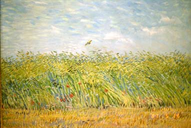
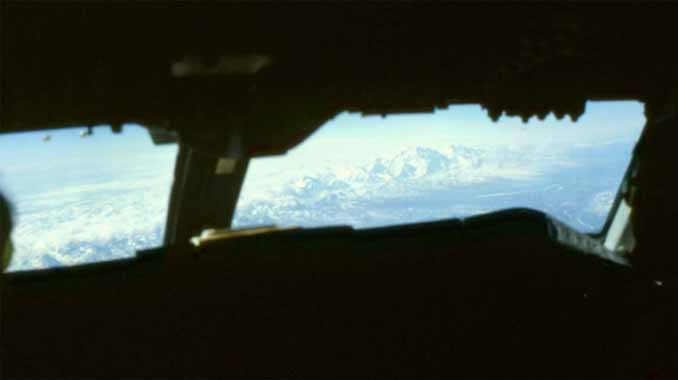

|
帰国休暇の旅も最後になりアムステルダムで乗り継ぎの為に１泊することになった。ホテルの
名前は忘れたが有名な大きなホテルであった。部屋に入ると誰かがベッドの上で寝転んだ形跡が
ある、しかも二人での形跡である。最後の帰国までけちがついた様な嫌な思いである、直ぐにフ
ロントに電話で状況を説明し部屋の交換を迫る。何となく掃除しなおすとか部屋がないとか言う
のではないかと思っていたら、向こうは一瞬びっくりしたようで直ぐに部屋を用意すると言って
きた。ボーイが新しいキーを持って数分以内に来てくれた。  翌日は最後のフライトである。１１時半にホテルから空港に向かうリムジンバスを予約した。 旅慣れてきたのと、もう一度ゴッホ美術館の本物の絵を見たくて翌日朝９時頃にゴッホ美術館を 訪れた。麦畑、跳ね橋が好きである。美術館の絵を堪能して１０時半頃に美術館をでる。 路面電車を待つが来ない、路面電車が来ないならタクシーと思うが来ない。１時間有りここか ら２０分も掛からないから大丈夫と思いつつ待つが両方来ない。待つ事４５分あと１５分しかな い１１：１５にやっとタクシーを捕まえた。事の次第を話し１１時半にリムジンバスが出るから 泊っているホテルに急いでくれと頼む。最悪間に合わなかったらこのままタクシーで空港に向か うつもりだった。タクシーの運転手は「まかせなさい」と言って、猛スピードでどんどん車を追い抜いてくれた。 ちょっとこちらがヒヤヒヤである。そして１１：２５にホテルに着く。相棒が心配して待ってい てくれた、ホテルから荷物を受け取りリムジンに乗り込む。最後のチェックインを空港で済ませ 無事搭乗出来ました。 大体のフライトは乗り込み、飛行機が飛び立つと飲み物そして食事になる。その後は大方眠りに つく。最後のフライトはＫＬＭオランダ航空である。食事に可愛らしい小さなワイングラスを見 つけ記念に持って帰りたくなった。皆が眠りについた頃を見計らって、キャビンルームに行く。 スチュワーデスが居て彼女にこのグラスを記念に持って帰りたいとお願いする。快く良いですよ 後でお持ちしますと言ってくれた。席で待っていたら持って来てくれて、冗句で「貴方だけ特別 ですよ、他の方に内緒にして下さい」と言って笑いながらグラスを割れないように包み４個を袋 に入れて渡してくれた。以前に好評だった私が撮った写真があったので、これを記念にあげよう と思いキャビンに出向く。前にキャビンに向かった時もだが、皆が寝ているので窓を閉めている ために機内は暗い、彼女を見つけて写真を渡す。私が言われた同じ冗句を繰り返す「貴女だけ特 別ですよ、他の方に内緒にして下さい」と言って、お互い笑いながら私は振り返り席に戻ろうと したらパーサーが座って書き物をしていた。来るときに暗くてパーサーに気がついていなかった のだ、パーサーはゲラゲラ笑っていた。  最後にアラスカ上空でマウントマッキンレーをコックピットから撮影させてもらった。もうマウ ントマッキンレーを撮影する事は困難になってしまった、飛行機はロシア上空を飛行できるよう になったのでアンカレッジ経由でのヨーロッパ往復便はないのである。 そして、無事日本に帰国できました。ＫＬＭのグラスは現在１個壊れ、まだ３個健在で時々使っています。 上の写真はコックピットからマウントマッキンレーを撮影。下はＫＬＭジャンボジェット機コックピット内。 ２００１年９月２０日 記
|
６２．「最終帰国時もトラブル続き・その２」（オランダ、写真有り）